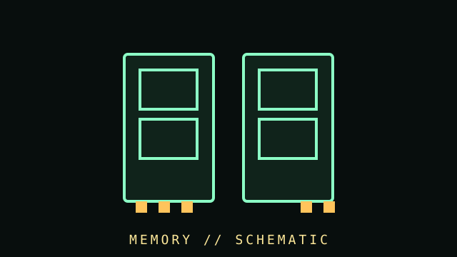

[ SUBCATEGORY DIRECTORY // 5 FILES // 189 PART RECORDS ]
Browse memory subcategories
Each subcategory has its own page and lists individual part records. Open a file to browse its cataloged components.
Memory modules used in early PC generations, including banked SIMMs and parity variants.
OPEN SUBCATEGORY FILE → SUBCATEGORY FILE // 11 PART RECORDSRambus RIMM modulesRDRAM modules and channel-specific termination/continuity requirements.
OPEN SUBCATEGORY FILE → SUBCATEGORY FILE // 60 PART RECORDSDDR DIMM generationsSDR SDRAM and successive DDR desktop DIMM standards, alongside separately identified product modules.
OPEN SUBCATEGORY FILE → SUBCATEGORY FILE // 55 PART RECORDSLaptop SO-DIMMsSmall-outline module generations and individual notebook memory products; matching generation and host support is essential.
OPEN SUBCATEGORY FILE → SUBCATEGORY FILE // 38 PART RECORDSECC and server DIMMsParity/ECC, unbuffered ECC, registered DIMM classes, and named server memory products. ECC type and buffering are separate compatibility dimensions.
OPEN SUBCATEGORY FILE →[ COMPONENT RECORD // VOLATILE MEMORY ]
Memory /
RAM.
Random-access memory holds active data for the processor. Desktop UDIMMs, laptop SO-DIMMs, registered server DIMMs, and soldered memory are distinct types with different mechanical and electrical requirements.

CLASS RECORD: DDR SDRAM memory modules. A DIMM's generation, capacity, rank, voltage, and supported timing must match the platform; modules from different DDR generations do not interchange.
Reference specifications
| Generation | DDR, DDR2, DDR3, DDR4, and DDR5 are electrically and mechanically distinct. Notches and pin arrangements prevent cross-generation insertion. |
|---|---|
| Form factor | 288-pin desktop DDR4/DDR5 UDIMMs and 260-pin DDR4/DDR5 SO-DIMMs are common examples; ECC/registered and older module standards vary. |
| Performance | Data rate (MT/s), CAS and secondary timings, ranks, channels, and memory-controller limits jointly affect behavior. XMP/EXPO profiles are optional overclocked settings. |
| Reliability | ECC capability depends on module type, CPU memory controller, motherboard routing, and firmware. On-die ECC in DDR5 is not the same as system-level ECC. |
Identification & installation
- Read the label or SPD data for part number, generation, capacity, rated speed, voltage, and profile information.
- Follow the motherboard's population diagram for dual/quad-channel placement; populate matched slots as the manual specifies.
- Start at platform-safe defaults when diagnosing instability. Memory advertised over the JEDEC baseline may require enabling a profile and is not guaranteed for every CPU.
- Handle modules by their edges, avoid touching contacts, and use ESD precautions. Never force a notched module into a mismatched socket.
Records to collect
Capture manufacturer, part number, revision, module type, organization/rank, SPD contents, rated and configured timings, test method, and error-correction support.
Sources & further reading
- JEDEC — JESD79-5, DDR5 SDRAM standardPrimary standards body reference; full standards may require purchase or account access.
- JEDEC — JESD79-4, DDR4 SDRAM standardGeneration-specific interface and device standard reference.
- Kingston — Memory technology and compatibility guidesManufacturer learning material; board/CPU documentation remains authoritative for compatibility.